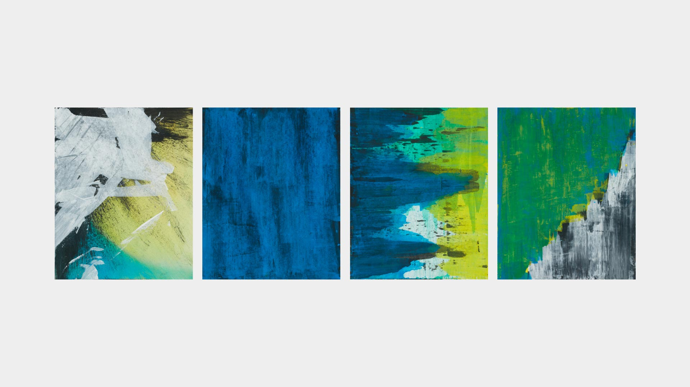
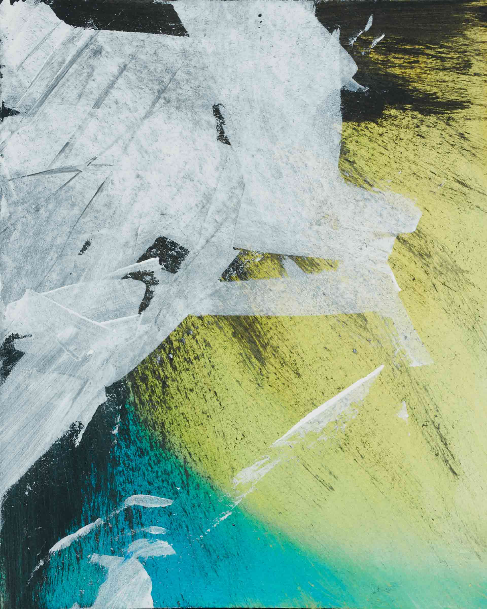
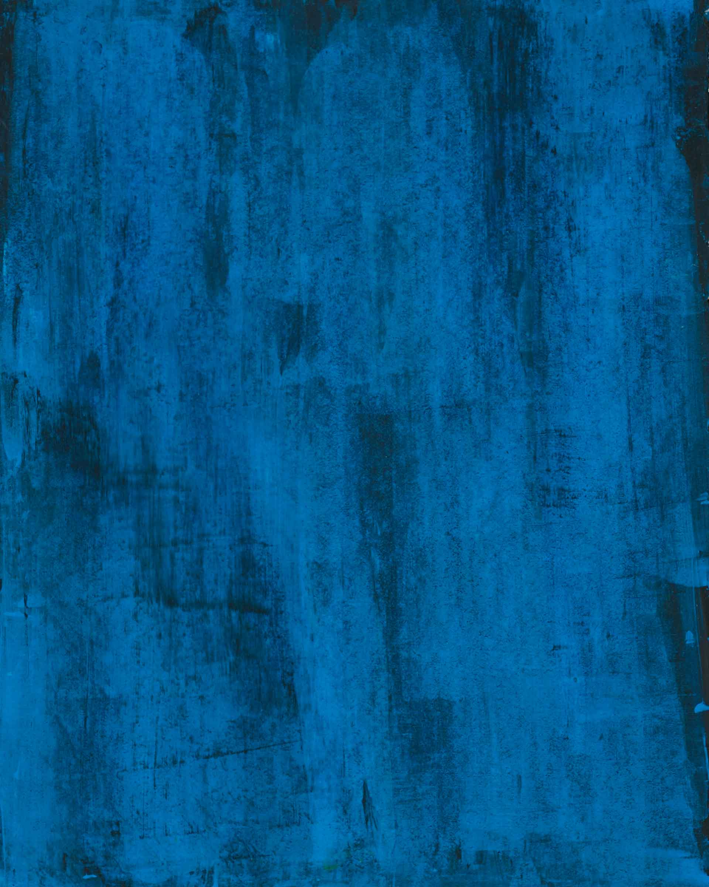
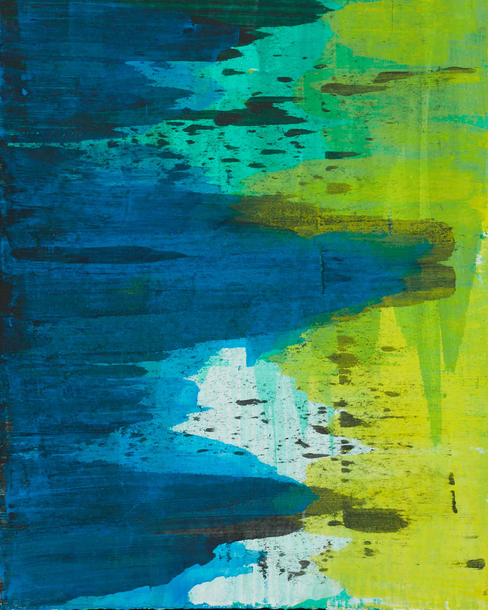
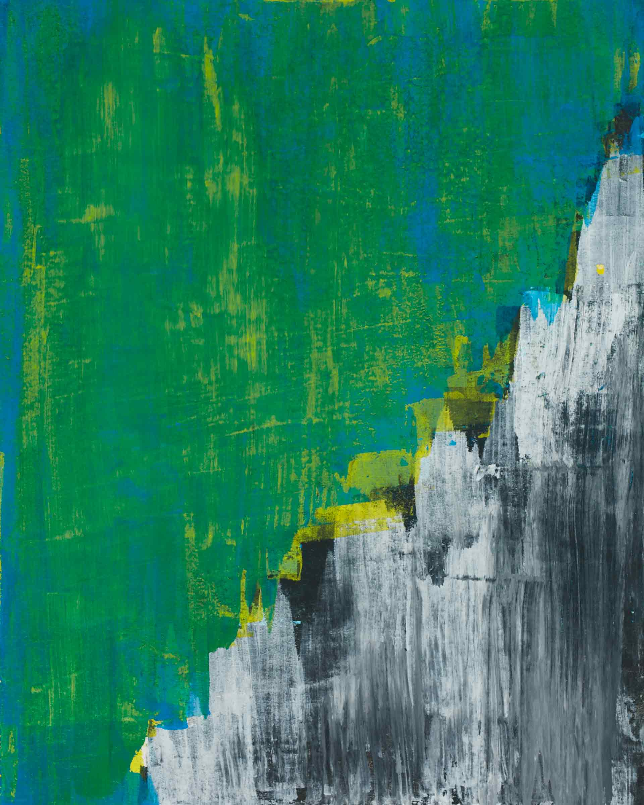
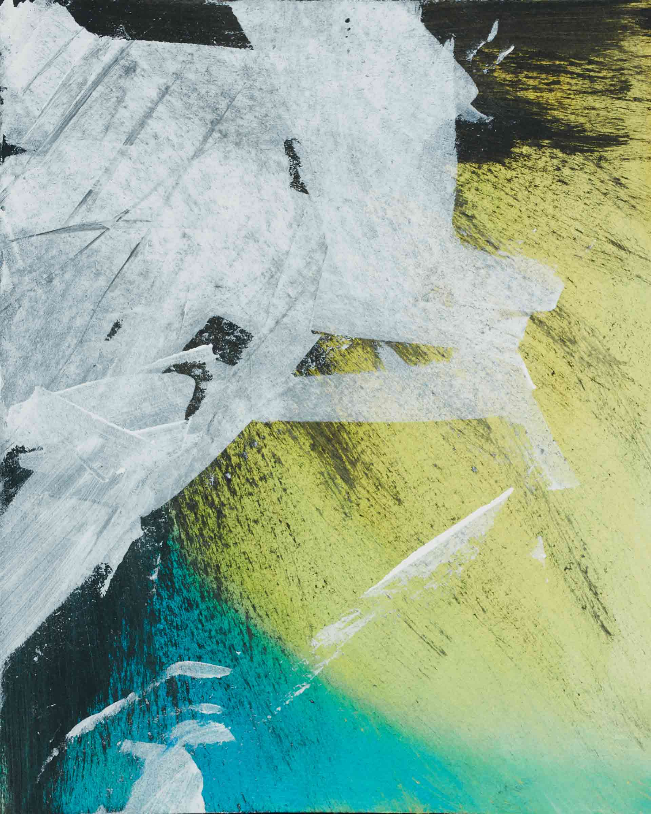
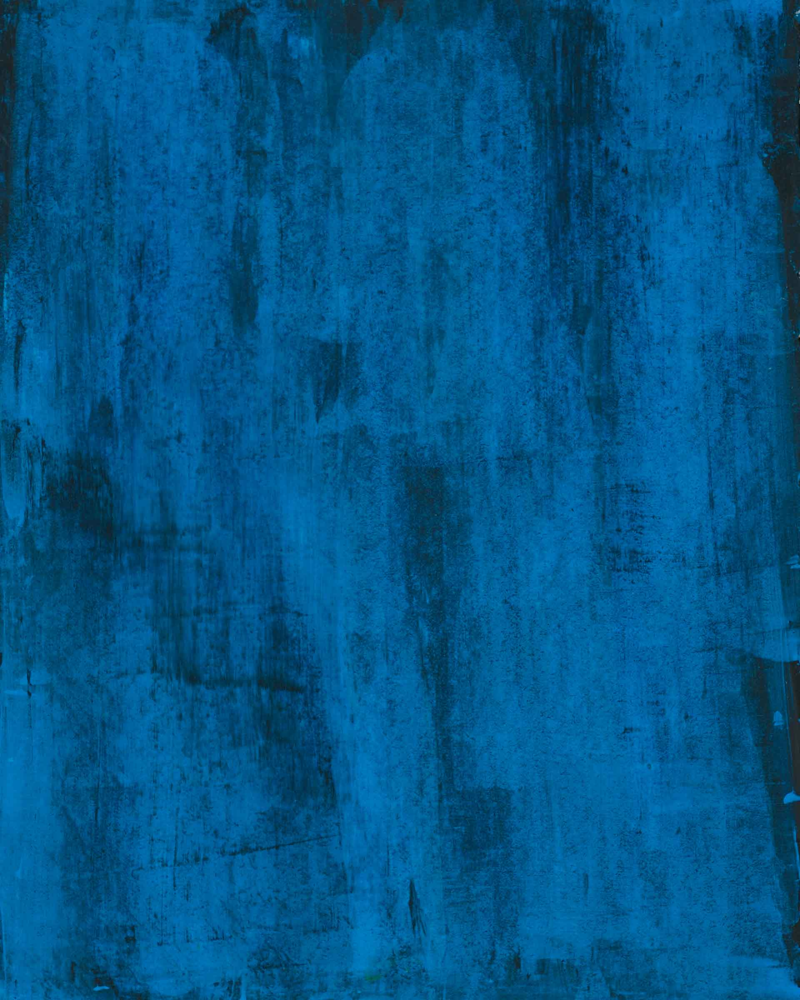
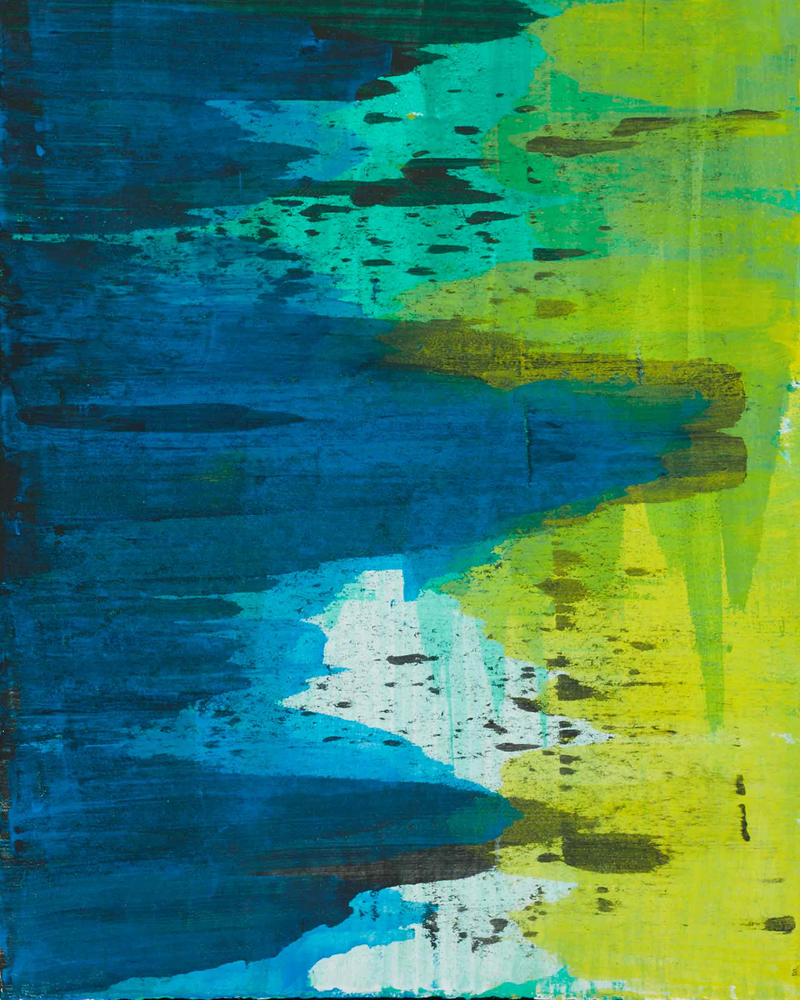
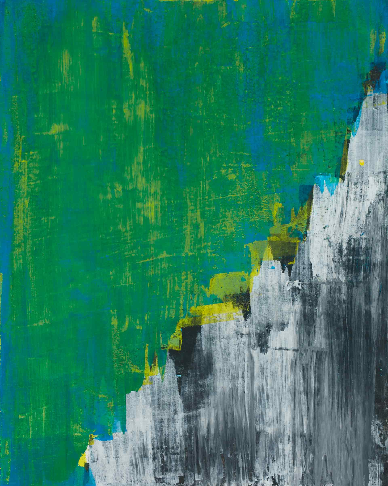

M 3.02
Abstract Painting
2017
A series of paintings in the style of Gerhard Richter
During an etching course taught by Anda Manea I took in my Bachelor's studies, I did a creative exercise
to better understand the colours and composition of abstract paintings. Just like famous painter Gerhard Richter, I
worked only with acrylic paint in primary colours, paintbrushes and the doctor blade to create a series of
four abstract paintings.








